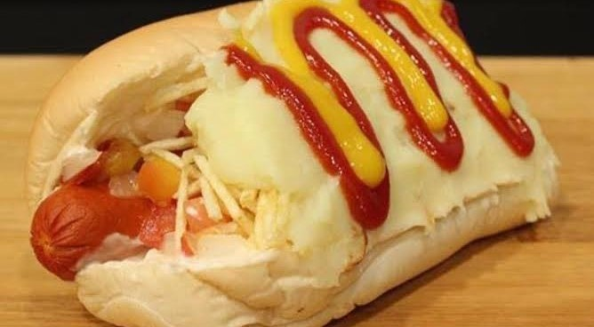

Virado à Paulista
A receita, de muita sustância, traz o feijão virado, arroz, banana à milanesa, ovo frito, couve refogada, linguiça, bisteca de porco e torresmo.
Sanduiche de Mortadela
Fatias e mais fatias de mortadela, uma verdadeira montanha fatiada, que transforma o pão num suculento lanche que vale por duas refeições.

Cachorro Quente com Purê de Batata
Contando com muitos ingredientes em sua montagem, o purê de batata é a marca do hot dog paulistano, ou o famoso "dogão".